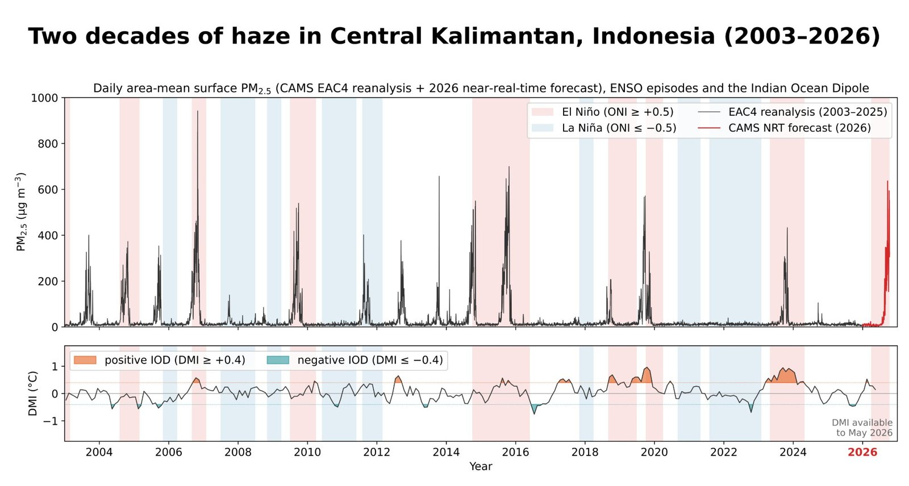

The haze in Indonesia is back
The haze in Indonesia is back, and its impacts are being felt across Maritime Southeast Asia!
Reuters reported yesterday that haze from Indonesia’s most intense El Niño-fueled wildfire season in 11 years has caused a spike in respiratory illnesses and forced school closures in Malaysia, with air quality in Singapore also dropping sharply. The BBC reports today that over 1 million fire hotspots have been recorded this season, burning around 900,000 hectares, much of it from land clearing on peatlands.
None of this came out of nowhere. Copernicus (CAMS) flagged the risk back in August: fires had started in late July, concentrated in the peatlands of West and Central Kalimantan, with a strong El Niño and a developing positive Indian Ocean Dipole expected to make the season particularly difficult. As they noted, intense fires have occurred in every recent El Niño year: 1997, 2005/06, 2015, 2019, 2023.
So I pulled 23 years of CAMS reanalysis data for Central Kalimantan, Sumatra and Singapore to see how this season compares. Daily PM2.5 from 2003 to 2026, with El Niño/La Niña episodes shaded and the Indian Ocean Dipole below. The data says the same thing. Almost every big haze year sits inside an El Niño window. El Niño (often together with a positive IOD) suppresses rainfall over Indonesia, and the drained peatlands burn. This year’s data (in red) already shows daily concentrations above 600 µg/m³. And what concerns me most is that the season isn’t over yet.
This is not only an Indonesian problem. The smoke crosses borders within days, which is why this is called transboundary haze. And it is not only a maritime Southeast Asia problem either. In about 4 to 5 months, the same story will repeat in mainland Southeast Asia, when the burning season in Myanmar, Laos, and northern Thailand brings severe haze to the region every year from February to April.
Two haze seasons a year in the region, both predictable. We understand the climate patterns behind these events, and we have the tools to monitor fires and air pollution. I hope we can put more effort into preventing fires, managing peatlands and reducing agricultural burning, rather than responding only after the haze has spread.
Data: CAMS EAC4 reanalysis and near-real-time forecasts, NOAA Oceanic Niño Index (ONI) and Dipole Mode Index (DMI).
